Last updated: 2026-01-28
Checks: 7 0
Knit directory: yap1_meox1_paper/
This reproducible R Markdown analysis was created with workflowr (version 1.7.1). The Checks tab describes the reproducibility checks that were applied when the results were created. The Past versions tab lists the development history.
Great! Since the R Markdown file has been committed to the Git repository, you know the exact version of the code that produced these results.
Great job! The global environment was empty. Objects defined in the global environment can affect the analysis in your R Markdown file in unknown ways. For reproduciblity it’s best to always run the code in an empty environment.
The command set.seed(20260119) was run prior to running
the code in the R Markdown file. Setting a seed ensures that any results
that rely on randomness, e.g. subsampling or permutations, are
reproducible.
Great job! Recording the operating system, R version, and package versions is critical for reproducibility.
Nice! There were no cached chunks for this analysis, so you can be confident that you successfully produced the results during this run.
Great job! Using relative paths to the files within your workflowr project makes it easier to run your code on other machines.
Great! You are using Git for version control. Tracking code development and connecting the code version to the results is critical for reproducibility.
The results in this page were generated with repository version 15b1c79. See the Past versions tab to see a history of the changes made to the R Markdown and HTML files.
Note that you need to be careful to ensure that all relevant files for
the analysis have been committed to Git prior to generating the results
(you can use wflow_publish or
wflow_git_commit). workflowr only checks the R Markdown
file, but you know if there are other scripts or data files that it
depends on. Below is the status of the Git repository when the results
were generated:
Ignored files:
Ignored: .DS_Store
Ignored: .Rhistory
Ignored: .Rproj.user/
Ignored: code/.DS_Store
Ignored: code/analysis/.DS_Store
Ignored: code/pre_processing/
Ignored: data/.DS_Store
Ignored: data/genesets/
Ignored: data/input/
Ignored: output/.DS_Store
Ignored: output/analysis/
Ignored: output/data/
Ignored: renv/library/
Ignored: renv/staging/
Untracked files:
Untracked: analysis/pre_processing_D10051_meox1_dataset_makeObject_Level02_annotation.Rmd
Note that any generated files, e.g. HTML, png, CSS, etc., are not included in this status report because it is ok for generated content to have uncommitted changes.
These are the previous versions of the repository in which changes were
made to the R Markdown
(analysis/pre_processing_D10051_meox1_dataset_makeObject_Level01_annotation.Rmd)
and HTML
(docs/pre_processing_D10051_meox1_dataset_makeObject_Level01_annotation.html)
files. If you’ve configured a remote Git repository (see
?wflow_git_remote), click on the hyperlinks in the table
below to view the files as they were in that past version.
| File | Version | Author | Date | Message |
|---|---|---|---|---|
| Rmd | 15b1c79 | Michelle Meier | 2026-01-28 | analysis/pre_processing_D10051_meox1_dataset_makeObject_Level02_annotation.Rmd |
| html | c317ea3 | Michelle Meier | 2026-01-28 | Build site. |
| Rmd | 23d11d5 | Michelle Meier | 2026-01-28 | wflow_publish("analysis/pre_processing_D10051_meox1_dataset_makeObject_Level01_annotation.Rmd") |
Annotate Level 01 of the meox1 dataset
Load libraries
suppressPackageStartupMessages({
library(tidyverse)
library(here)
library(Seurat)
library(scDblFinder)
library(ggpubr)
library(clustree)
library(patchwork)
library(scater)
library(scran)
library(qs2)
library(tricycle)
library(scGate)
})Objects made here: ./pre_processing_D10051_meox1_dataset_makeObject_Level01.Rmd
Only loading merged ones for now.
input_paths <- c(here('output/data/Datsets/D10051_meox1_dataset/D10051_meox1_dataset_Level_01_kept_doublets.qs2'),
here('output/data/Datsets/D10051_meox1_dataset/D10051_meox1_dataset_Level_01.qs2'))
list_objects <- lapply(input_paths, qs_read)
names(list_objects) <- gsub("\\.qs2", "", basename(input_paths))Give them names in the object
list_objects$D10051_meox1_dataset_Level_01_kept_doublets@misc[["name"]] <- "Level_01_kept_doublets"
list_objects$D10051_meox1_dataset_Level_01@misc[["name"]] <- "Level_01"Read in mouse -> fish names
mouse_to_fish <- qs_read(here("data/genesets/geneMap_mmusculus_to_drerio.qs2"))plot_sizing <- theme_bw()+ theme(axis.title = element_text(size = 16),
axis.text = element_text(size = 14, colour = "black"),
plot.title = element_text(size = 18),
legend.text = element_text(size = 14),
legend.title = element_blank())
plot_sizing_seurat <- theme(axis.title = element_text(size = 16),
axis.text = element_text(size = 14, colour = "black"),
plot.title = element_text(size = 18),
legend.text = element_text(size = 14))
rotate_x <- theme(axis.text.x = element_text(angle = 90, vjust = 0.5, hjust=1))
strip_fix <- theme(strip.background = element_rect(fill = "white"),
strip.text = element_text(size = 14))Make function.
run_tricycle_for_fish <- function(seurat, x_species_dictionary = mouse_to_fish){
#prepare
sce <- as.SingleCellExperiment(seurat, assay = "RNA") #convert to SCE
sub_sce <- sce[rownames(sce) %in% x_species_dictionary$drerio_zfin_id_symbol,] #subset to genes in dic
sub_x_species_dictionary <- x_species_dictionary %>% #subset dictionary to only include the genes that we kept
filter(., drerio_zfin_id_symbol %in% rownames(sub_sce)) %>%
distinct(drerio_zfin_id_symbol, .keep_all = TRUE) #needed for function
sub_x_species_dictionary <- sub_x_species_dictionary[match(rownames(sub_sce),
sub_x_species_dictionary$drerio_zfin_id_symbol),]
stopifnot(all(sub_x_species_dictionary$drerio_zfin_id_symbol == rownames(sub_sce))) #check
#run tricycle
sub_sce <- project_cycle_space(sub_sce,
gname = sub_x_species_dictionary$mmusculus_mgi_symbol,
species = "mouse",
gname.type = "SYMBOL")
#estimate position
sub_sce <- estimate_cycle_position(sub_sce)
#add back to seurat object
seurat$tricycle_position <- sub_sce$tricyclePosition
#add categorical cell cycle:
# https://github.com/lb15/multiciliation_cycle/blob/main/mcc_timecourse/mcc_timecourse_analysis.R#L619
seurat$tricycle_stage <- case_when(seurat$tricycle_position > pi/2 & seurat$tricycle_position < pi ~ "S",
seurat$tricycle_position >= pi & seurat$tricycle_position < pi*7/4 ~ "G2M",
TRUE ~ "G1/G0")
rm(sce,sub_sce, sub_x_species_dictionary); gc()
return(seurat)
}list_objects <- lapply(list_objects, run_tricycle_for_fish)No custom reference projection matrix provided. The ref learned from mouse Neuroshpere data will be used.The number of projection genes found in the new data is 429.No custom reference projection matrix provided. The ref learned from mouse Neuroshpere data will be used.The number of projection genes found in the new data is 429.Write function:
make_tricycle_plots <- function(seurat){
#colours
cols_cellcycle <- c('#ffff66', '#a0d0e0', '#cc85ff')
names(cols_cellcycle) <- c('G1', 'G2M', 'S')
rects <- data.frame(xmin = c(0, 0.5*pi, pi, 1.75*pi),
xmax = c(0.5*pi, pi, 1.75*pi, 2*pi),
fill = c('#ffff66', '#cc85ff','#a0d0e0', '#ffff66'))
plot_list <- list()
plot_list[[1]] <- fit_periodic_loess(seurat$tricycle_position,
seurat[["RNA"]]@layers$data[which(rownames(seurat) == 'cdt1'),],
plot = TRUE,
x_lab = "Cell cycle position \u03b8", y_lab = "cdt1 expression",
fig.title = paste0("Expression of cdt1 (G1-phase)"))$fig +
plot_sizing +
annotate(geom = "text", x = c(0.25*pi, 0.75*pi, 1.4*pi, 1.9*pi), y = 4, label = c("G0/G1", "S", "G2M","G0/G1"), size = 4) +
coord_cartesian(expand = FALSE, clip = "off", ylim = c(0, 4.5)) +
geom_vline(xintercept=0.5*pi,linetype="dashed")+
geom_vline(xintercept =pi,linetype="dashed")+
geom_vline(xintercept=1.75*pi,linetype="dashed") +
geom_rect(aes(xmin = xmin, xmax = xmax, fill = fill, ymin = -Inf, ymax = Inf),
data = rects, inherit.aes = FALSE, size = 1, alpha = .1) +
scale_fill_manual(values = c( '#a0d0e0', '#cc85ff', '#ffff66','#ffff66')) +
theme(legend.position = "none")
plot_list[[2]] <- fit_periodic_loess(seurat$tricycle_position,
seurat[["RNA"]]@layers$data[which(rownames(seurat) == 'pcna'),],
plot = TRUE,
x_lab = "Cell cycle position \u03b8", y_lab = "pcna expression",
fig.title = paste0("Expression of pcna (S-phase)"))$fig +
plot_sizing +
annotate(geom = "text", x = c(0.25*pi, 0.75*pi, 1.4*pi, 1.9*pi), y = 4, label = c("G0/G1", "S", "G2M","G0/G1"), size = 4) +
coord_cartesian(expand = FALSE, clip = "off", ylim = c(0, 6)) +
geom_vline(xintercept=0.5*pi,linetype="dashed")+
geom_vline(xintercept =pi,linetype="dashed")+
geom_vline(xintercept=1.75*pi,linetype="dashed") +
geom_rect(aes(xmin = xmin, xmax = xmax, fill = fill, ymin = -Inf, ymax = Inf),
data = rects, inherit.aes = FALSE, size = 1, alpha = .1) +
scale_fill_manual(values = c( '#a0d0e0', '#cc85ff', '#ffff66','#ffff66')) +
theme(legend.position = "none")
plot_list[[3]] <- fit_periodic_loess(seurat$tricycle_position,
seurat[["RNA"]]@layers$data[which(rownames(seurat) == 'mki67'),],
plot = TRUE,
x_lab = "Cell cycle position \u03b8", y_lab = "mki67 expression",
fig.title = paste0("Expression of mki67 (G2M-phase)"))$fig +
plot_sizing +
annotate(geom = "text", x = c(0.25*pi, 0.75*pi, 1.4*pi, 1.9*pi), y = 4, label = c("G0/G1", "S", "G2M","G0/G1"), size = 4) +
coord_cartesian(expand = FALSE, clip = "off", ylim = c(0, 4.5)) +
geom_vline(xintercept=0.5*pi,linetype="dashed")+
geom_vline(xintercept =pi,linetype="dashed")+
geom_vline(xintercept=1.75*pi,linetype="dashed") +
geom_rect(aes(xmin = xmin, xmax = xmax, fill = fill, ymin = -Inf, ymax = Inf),
data = rects, inherit.aes = FALSE, size = 1, alpha = .1) +
scale_fill_manual(values = c( '#a0d0e0', '#cc85ff', '#ffff66','#ffff66')) +
theme(legend.position = "none")
return(plot_list)
}Run for all
plot_list <- lapply(list_objects, make_tricycle_plots)Warning in data.frame(theta = theta.v, y = y): row names were found from a
short variable and have been discardedWarning: `aes_string()` was deprecated in ggplot2 3.0.0.
ℹ Please use tidy evaluation idioms with `aes()`.
ℹ See also `vignette("ggplot2-in-packages")` for more information.
ℹ The deprecated feature was likely used in the tricycle package.
Please report the issue at <https://github.com/hansenlab/tricycle/issues>.
This warning is displayed once every 8 hours.
Call `lifecycle::last_lifecycle_warnings()` to see where this warning was
generated.Warning: Using `size` aesthetic for lines was deprecated in ggplot2 3.4.0.
ℹ Please use `linewidth` instead.
ℹ The deprecated feature was likely used in the tricycle package.
Please report the issue at <https://github.com/hansenlab/tricycle/issues>.
This warning is displayed once every 8 hours.
Call `lifecycle::last_lifecycle_warnings()` to see where this warning was
generated.Warning in data.frame(theta = theta.v, y = y): row names were found from a
short variable and have been discarded
Warning in data.frame(theta = theta.v, y = y): row names were found from a
short variable and have been discarded
Warning in data.frame(theta = theta.v, y = y): row names were found from a
short variable and have been discarded
Warning in data.frame(theta = theta.v, y = y): row names were found from a
short variable and have been discarded
Warning in data.frame(theta = theta.v, y = y): row names were found from a
short variable and have been discardedwrap_plots(unlist(plot_list, recursive = F)) + plot_annotation(title = "top = with doublets, bottom = without")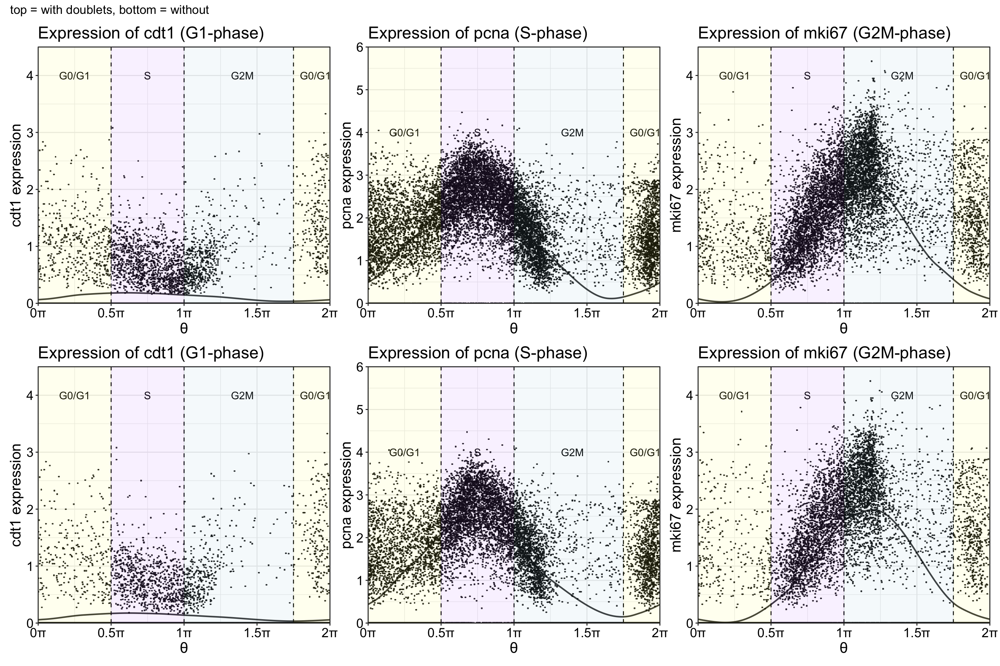
| Version | Author | Date |
|---|---|---|
| c317ea3 | Michelle Meier | 2026-01-28 |
run_umap_stages <- function(seurat){
#colours
cols_cellcycle <- c('#ffff66', '#a0d0e0', '#cc85ff')
names(cols_cellcycle) <- c('G1/G0', 'G2M', 'S')
#plot
DimPlot(seurat, group.by = "tricycle_stage", cols = cols_cellcycle) + ggtitle(seurat@misc$name)
}plot_list <- lapply(list_objects, run_umap_stages)
wrap_plots(plot_list, ncol = 2) + plot_layout(guides = "collect", axis_titles = "collect")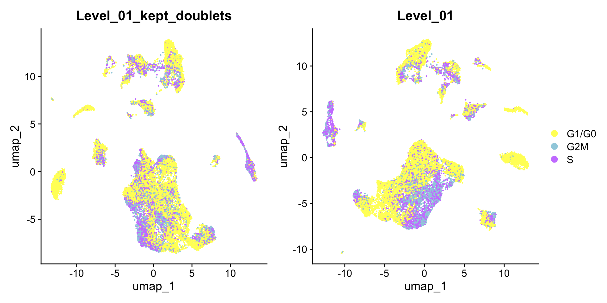
| Version | Author | Date |
|---|---|---|
| c317ea3 | Michelle Meier | 2026-01-28 |
plot_list <- lapply(list_objects, function(seurat){
clustree(seurat) + ggtitle(seurat@misc$name)
})
wrap_plots(plot_list, ncol = 2)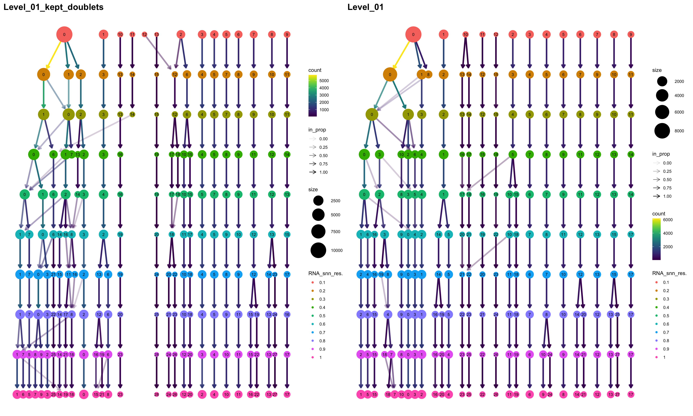
| Version | Author | Date |
|---|---|---|
| c317ea3 | Michelle Meier | 2026-01-28 |
Maybe try 0.5? Might already be too granular.
Do any clusters have high mt and/or low count? Being mindful that some celltypes do have naturally higher %mt and counts.
plot_list <- lapply(list_objects, function(seurat){
plot_list <- list()
plot_list[[1]] <- seurat@meta.data %>%
ggplot(., aes(y = log10(nCount_RNA), x = RNA_snn_res.0.5, fill=RNA_snn_res.0.5)) +
geom_boxplot() +
plot_sizing + theme(legend.position = "none")
plot_list[[2]] <- seurat@meta.data %>%
ggplot(., aes(y = log10(nFeature_RNA), x = RNA_snn_res.0.5, fill=RNA_snn_res.0.5)) +
geom_boxplot() +
plot_sizing + theme(legend.position = "none")
plot_list[[3]] <- seurat@meta.data %>%
ggplot(., aes(y = percent.mt, x = RNA_snn_res.0.5, fill=RNA_snn_res.0.5)) +
geom_boxplot() +
plot_sizing + theme(legend.position = "none")
return(plot_list)
})
wrap_plots(unlist(plot_list, recursive = F)) + plot_layout(axis_titles = "collect") 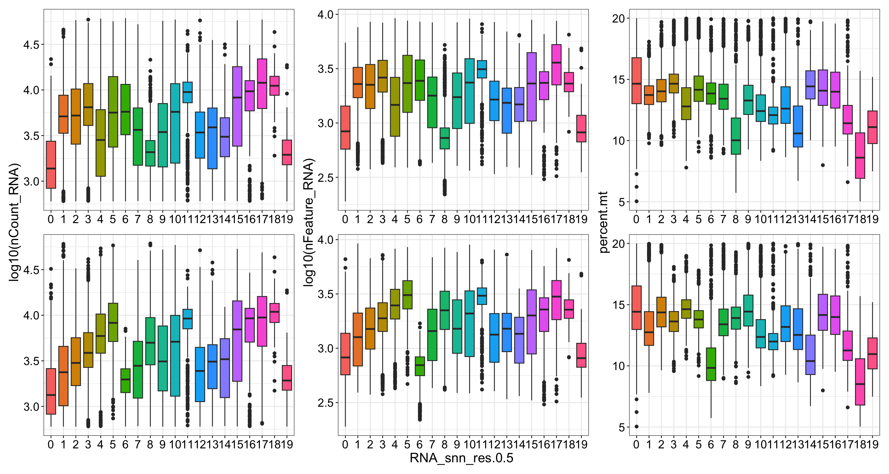
| Version | Author | Date |
|---|---|---|
| c317ea3 | Michelle Meier | 2026-01-28 |
There are definitively a few clusters with smaller library size, though they don’t necessarily seem to express many mito genes.
Make DimPlots for this resolution.
plot_list <- lapply(list_objects, function(seurat){
DimPlot(seurat, group.by = "RNA_snn_res.0.5", shuffle = T, label = T)
})
wrap_plots(plot_list, ncol = 2)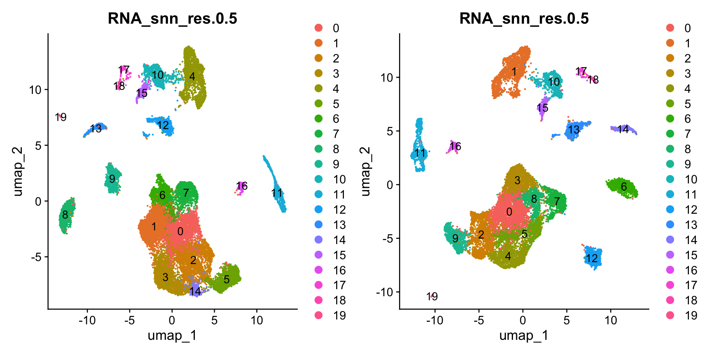
| Version | Author | Date |
|---|---|---|
| c317ea3 | Michelle Meier | 2026-01-28 |
I really hate this, nmads doesn’t work, and its very difficult to say whether these cells are bad quality or not- because in terms of number of genes they do still express quite a decent amount. The two peaks are just not right.
plot_list <- lapply(list_objects, function(seurat){
plot_list <- list()
#ncount
plot_list[[1]] <- ggplot(seurat@meta.data, aes(x=log10(nCount_RNA))) +
geom_histogram(aes(y=..density..), colour="black", fill="white")+
geom_density(alpha=.2, fill="#FF6666")+ xlab('log10(count)') +
plot_sizing + ggtitle(sprintf("Library size, %s", seurat@project.name))
#nfeat
plot_list[[2]] <- ggplot(seurat@meta.data, aes(x=log10(nFeature_RNA))) +
geom_histogram(aes(y=..density..), colour="black", fill="white")+
geom_density(alpha=.2, fill="#FF6666")+ xlab('log10(nfeature)') +
plot_sizing + ggtitle(sprintf("#features, %s", seurat@project.name))
return(plot_list)
})
wrap_plots(unlist(plot_list, recursive = F), ncol =2)Warning: The dot-dot notation (`..density..`) was deprecated in ggplot2 3.4.0.
ℹ Please use `after_stat(density)` instead.
This warning is displayed once every 8 hours.
Call `lifecycle::last_lifecycle_warnings()` to see where this warning was
generated.`stat_bin()` using `bins = 30`. Pick better value `binwidth`.
`stat_bin()` using `bins = 30`. Pick better value `binwidth`.
`stat_bin()` using `bins = 30`. Pick better value `binwidth`.
`stat_bin()` using `bins = 30`. Pick better value `binwidth`.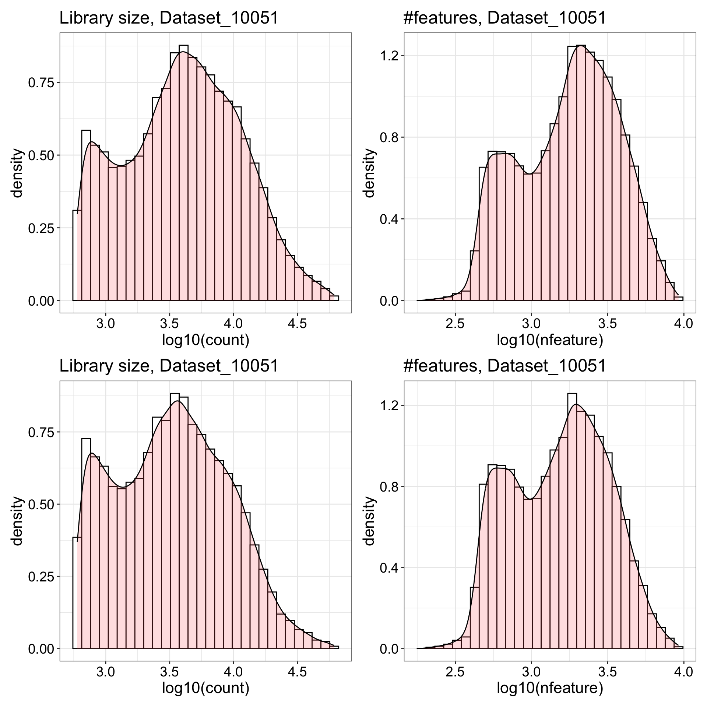
| Version | Author | Date |
|---|---|---|
| c317ea3 | Michelle Meier | 2026-01-28 |
It particularly looks like the features were not affected by the ncount threshold of 600 at all (this is roughly what the yap1 dataset had)
list_objects$D10051_meox1_dataset_Level_01_kept_doublets$nFeature_RNA %>% min()[1] 190Yeah, that’s too low. We need to implement another round of filtering. Feature threshold in the yap1 dataset was ~400. Let’s use this and re-run.
Try some more stringent feature thresholds
remove_outliers <- function(seurat){
countfeatures_low <- seurat$nFeature_RNA < 400
seurat <- seurat[, !countfeatures_low]
}list_objects <- lapply(list_objects, remove_outliers)plot_list <- lapply(list_objects, function(seurat){
plot_list <- list()
#ncount
plot_list[[1]] <- ggplot(seurat@meta.data, aes(x=log10(nCount_RNA))) +
geom_histogram(aes(y=..density..), colour="black", fill="white")+
geom_density(alpha=.2, fill="#FF6666")+ xlab('log10(count)') +
plot_sizing + ggtitle(sprintf("Library size, %s", seurat@project.name))
#nfeat
plot_list[[2]] <- ggplot(seurat@meta.data, aes(x=log10(nFeature_RNA))) +
geom_histogram(aes(y=..density..), colour="black", fill="white")+
geom_density(alpha=.2, fill="#FF6666")+ xlab('log10(nfeature)') +
plot_sizing + ggtitle(sprintf("#features, %s", seurat@project.name))
return(plot_list)
})
wrap_plots(unlist(plot_list, recursive = F), ncol =2)`stat_bin()` using `bins = 30`. Pick better value `binwidth`.
`stat_bin()` using `bins = 30`. Pick better value `binwidth`.
`stat_bin()` using `bins = 30`. Pick better value `binwidth`.
`stat_bin()` using `bins = 30`. Pick better value `binwidth`.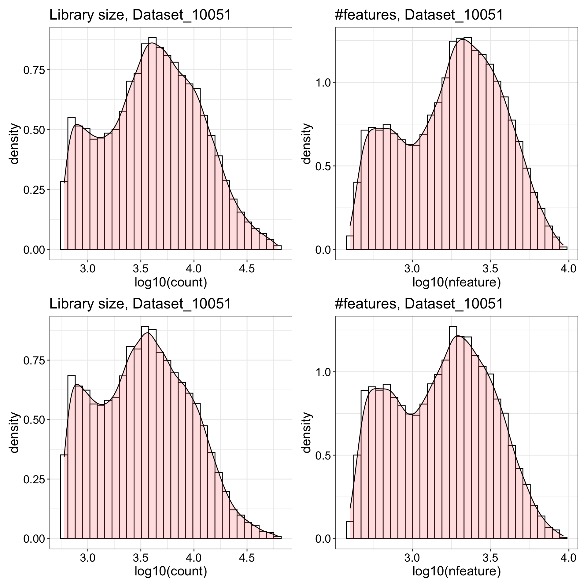
| Version | Author | Date |
|---|---|---|
| c317ea3 | Michelle Meier | 2026-01-28 |
Not using sctransform, regressing out %mito
run_workflow <- function(seurat){
seurat <- NormalizeData(seurat) %>% #should deal with basic library size differences
FindVariableFeatures() %>%
ScaleData(., vars.to.regress = c("percent.mt")) %>%
RunPCA() %>%
RunUMAP(., dims = 1:30) %>% #defaults
FindNeighbors(., dims = 1:30) %>%
FindClusters(., resolution = seq(0.1, 1, 0.1))
}list_objects <- lapply(list_objects, run_workflow)Warning: Different features in new layer data than already exists for
scale.dataWarning: The default method for RunUMAP has changed from calling Python UMAP via reticulate to the R-native UWOT using the cosine metric
To use Python UMAP via reticulate, set umap.method to 'umap-learn' and metric to 'correlation'
This message will be shown once per sessionModularity Optimizer version 1.3.0 by Ludo Waltman and Nees Jan van Eck
Number of nodes: 20998
Number of edges: 796789
Running Louvain algorithm...
Maximum modularity in 10 random starts: 0.9625
Number of communities: 12
Elapsed time: 2 seconds
Modularity Optimizer version 1.3.0 by Ludo Waltman and Nees Jan van Eck
Number of nodes: 20998
Number of edges: 796789
Running Louvain algorithm...
Maximum modularity in 10 random starts: 0.9437
Number of communities: 16
Elapsed time: 2 seconds
Modularity Optimizer version 1.3.0 by Ludo Waltman and Nees Jan van Eck
Number of nodes: 20998
Number of edges: 796789
Running Louvain algorithm...
Maximum modularity in 10 random starts: 0.9328
Number of communities: 17
Elapsed time: 2 seconds
Modularity Optimizer version 1.3.0 by Ludo Waltman and Nees Jan van Eck
Number of nodes: 20998
Number of edges: 796789
Running Louvain algorithm...
Maximum modularity in 10 random starts: 0.9230
Number of communities: 17
Elapsed time: 2 seconds
Modularity Optimizer version 1.3.0 by Ludo Waltman and Nees Jan van Eck
Number of nodes: 20998
Number of edges: 796789
Running Louvain algorithm...
Maximum modularity in 10 random starts: 0.9155
Number of communities: 22
Elapsed time: 1 seconds
Modularity Optimizer version 1.3.0 by Ludo Waltman and Nees Jan van Eck
Number of nodes: 20998
Number of edges: 796789
Running Louvain algorithm...
Maximum modularity in 10 random starts: 0.9088
Number of communities: 23
Elapsed time: 1 seconds
Modularity Optimizer version 1.3.0 by Ludo Waltman and Nees Jan van Eck
Number of nodes: 20998
Number of edges: 796789
Running Louvain algorithm...
Maximum modularity in 10 random starts: 0.9024
Number of communities: 24
Elapsed time: 1 seconds
Modularity Optimizer version 1.3.0 by Ludo Waltman and Nees Jan van Eck
Number of nodes: 20998
Number of edges: 796789
Running Louvain algorithm...
Maximum modularity in 10 random starts: 0.8970
Number of communities: 26
Elapsed time: 2 seconds
Modularity Optimizer version 1.3.0 by Ludo Waltman and Nees Jan van Eck
Number of nodes: 20998
Number of edges: 796789
Running Louvain algorithm...
Maximum modularity in 10 random starts: 0.8913
Number of communities: 27
Elapsed time: 1 seconds
Modularity Optimizer version 1.3.0 by Ludo Waltman and Nees Jan van Eck
Number of nodes: 20998
Number of edges: 796789
Running Louvain algorithm...
Maximum modularity in 10 random starts: 0.8861
Number of communities: 29
Elapsed time: 1 secondsModularity Optimizer version 1.3.0 by Ludo Waltman and Nees Jan van Eck
Number of nodes: 16869
Number of edges: 633001
Running Louvain algorithm...
Maximum modularity in 10 random starts: 0.9643
Number of communities: 13
Elapsed time: 1 seconds
Modularity Optimizer version 1.3.0 by Ludo Waltman and Nees Jan van Eck
Number of nodes: 16869
Number of edges: 633001
Running Louvain algorithm...
Maximum modularity in 10 random starts: 0.9455
Number of communities: 16
Elapsed time: 1 seconds
Modularity Optimizer version 1.3.0 by Ludo Waltman and Nees Jan van Eck
Number of nodes: 16869
Number of edges: 633001
Running Louvain algorithm...
Maximum modularity in 10 random starts: 0.9329
Number of communities: 16
Elapsed time: 1 seconds
Modularity Optimizer version 1.3.0 by Ludo Waltman and Nees Jan van Eck
Number of nodes: 16869
Number of edges: 633001
Running Louvain algorithm...
Maximum modularity in 10 random starts: 0.9242
Number of communities: 19
Elapsed time: 1 seconds
Modularity Optimizer version 1.3.0 by Ludo Waltman and Nees Jan van Eck
Number of nodes: 16869
Number of edges: 633001
Running Louvain algorithm...
Maximum modularity in 10 random starts: 0.9171
Number of communities: 21
Elapsed time: 1 seconds
Modularity Optimizer version 1.3.0 by Ludo Waltman and Nees Jan van Eck
Number of nodes: 16869
Number of edges: 633001
Running Louvain algorithm...
Maximum modularity in 10 random starts: 0.9103
Number of communities: 22
Elapsed time: 1 seconds
Modularity Optimizer version 1.3.0 by Ludo Waltman and Nees Jan van Eck
Number of nodes: 16869
Number of edges: 633001
Running Louvain algorithm...
Maximum modularity in 10 random starts: 0.9045
Number of communities: 25
Elapsed time: 1 seconds
Modularity Optimizer version 1.3.0 by Ludo Waltman and Nees Jan van Eck
Number of nodes: 16869
Number of edges: 633001
Running Louvain algorithm...
Maximum modularity in 10 random starts: 0.8990
Number of communities: 27
Elapsed time: 1 seconds
Modularity Optimizer version 1.3.0 by Ludo Waltman and Nees Jan van Eck
Number of nodes: 16869
Number of edges: 633001
Running Louvain algorithm...
Maximum modularity in 10 random starts: 0.8940
Number of communities: 28
Elapsed time: 1 seconds
Modularity Optimizer version 1.3.0 by Ludo Waltman and Nees Jan van Eck
Number of nodes: 16869
Number of edges: 633001
Running Louvain algorithm...
Maximum modularity in 10 random starts: 0.8888
Number of communities: 28
Elapsed time: 1 secondsrun_pca_correlations <- function(seurat){
plot_list <- list()
meta <- seurat@meta.data %>%
mutate(., log10ncount = log10(nCount_RNA),
log10nfeat = log10(nFeature_RNA)) %>%
select(., log10ncount, log10nfeat) %>%
rownames_to_column("Barcode") %>%
full_join(., seurat@reductions$pca@cell.embeddings %>% as.data.frame() %>% rownames_to_column("Barcode") %>% select(., Barcode, PC_1, PC_2,PC_3))
#ncount
plot_list[[1]] <- ggscatter(meta, x = "PC_1", y = "log10ncount",
add = "reg.line",
conf.int = TRUE,
add.params = list(color = "red4",
fill = "lightgray")) +
plot_sizing + ylab("log10(nCount)") + xlab("PC1") +
stat_cor(method = "pearson", size = 5, colour = "red4") +
ggtitle(sprintf("PC1 vs library size, %s", seurat@project.name))
#nfeat
plot_list[[2]] <- ggscatter(meta, x = "PC_2", y = "log10ncount",
add = "reg.line",
conf.int = TRUE,
add.params = list(color = "red4",
fill = "lightgray")) +
plot_sizing + ylab("log10(nCount)") + xlab("PC1") +
stat_cor(method = "pearson", size = 5, colour = "red4") +
ggtitle(sprintf("PC2 vs library size, %s", seurat@project.name))
#mito
plot_list[[3]] <- ggscatter(meta, x = "PC_3", y = "log10ncount",
add = "reg.line",
conf.int = TRUE,
add.params = list(color = "red4",
fill = "lightgray")) +
plot_sizing + ylab("log10(nCount)") + xlab("PC1") +
stat_cor(method = "pearson", size = 5, colour = "red4") +
ggtitle(sprintf("PC3 vs library size, %s", seurat@project.name))
return(plot_list)
}plot_list <- lapply(list_objects, run_pca_correlations)Joining with `by = join_by(Barcode)`
Joining with `by = join_by(Barcode)`wrap_plots(unlist(plot_list, recursive = F)) + plot_annotation("top with doublets, bottom without")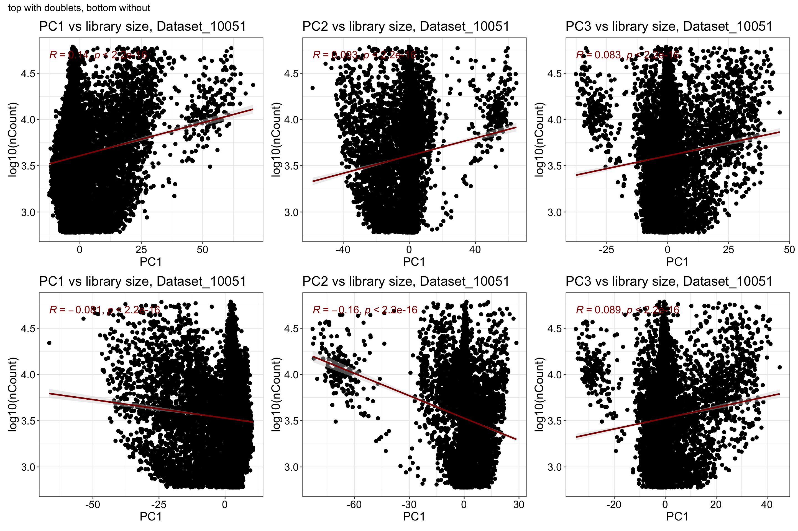
| Version | Author | Date |
|---|---|---|
| c317ea3 | Michelle Meier | 2026-01-28 |
Not that much to see, only make UMAPs for nfeature, ncount and seurat_cluster.
plot_umap_dataset <- function(seurat){
plot_list <- list()
plot_list[[1]] <- FeaturePlot(seurat, features = c("nCount_RNA")) + ggtitle(seurat@project.name)
plot_list[[2]] <- FeaturePlot(seurat, features = c("nFeature_RNA")) + ggtitle(seurat@project.name)
plot_list[[3]] <- DimPlot(seurat, group.by = c("seurat_clusters")) + ggtitle(seurat@project.name)
plot_list[[4]] <- DimPlot(seurat, group.by = c("Genotype"), shuffle = T) + ggtitle(seurat@project.name)
return(plot_list)
}Top with, bottom without doublets.
plot_list <- lapply(list_objects, plot_umap_dataset)
wrap_plots(unlist(plot_list, recursive = F), ncol = 4) 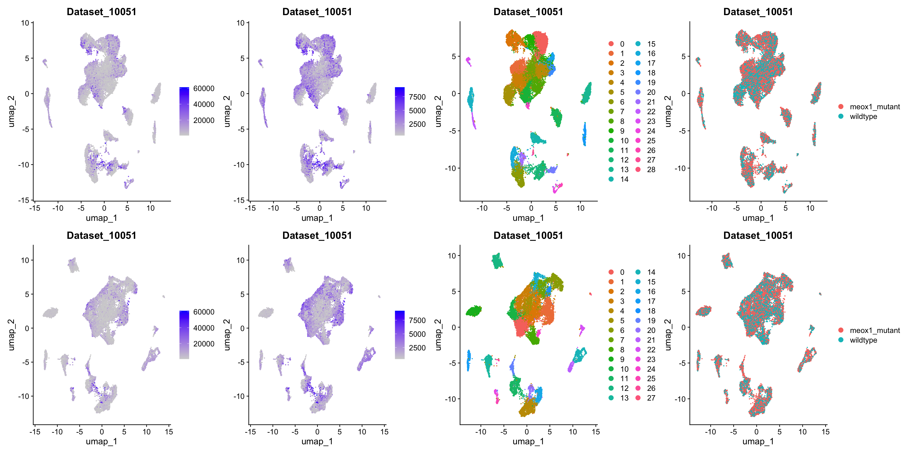
| Version | Author | Date |
|---|---|---|
| c317ea3 | Michelle Meier | 2026-01-28 |
run_stacked_barplot <- function(seurat){
seurat@meta.data %>%
select(., starts_with("RNA"), Genotype) %>%
pivot_longer(., cols = starts_with("RNA"), names_to = "resolution", values_to = "cluster") %>%
group_by(resolution, cluster, Genotype) %>%
summarise(., count =n()) %>%
ggplot(., aes(x = cluster, y = count, fill = Genotype))+
geom_bar(position = "fill", stat = "identity") +
facet_wrap(~resolution, scales = "free_x", ncol =5) + plot_sizing+ strip_fix
}plot_list <- lapply(list_objects, run_stacked_barplot)`summarise()` has grouped output by 'resolution', 'cluster'. You can override
using the `.groups` argument.
`summarise()` has grouped output by 'resolution', 'cluster'. You can override
using the `.groups` argument.wrap_plots(plot_list, ncol = 1) + plot_layout(guides = "collect", axis_titles = "collect")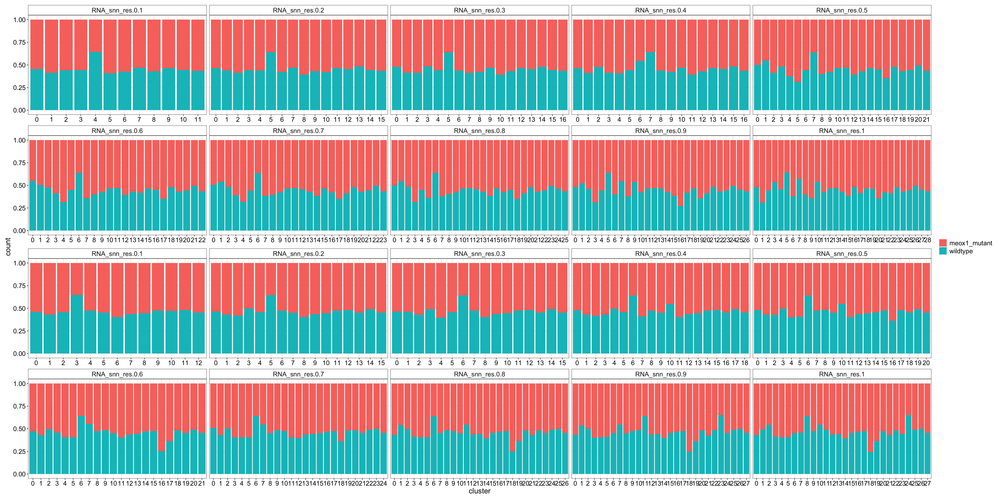
| Version | Author | Date |
|---|---|---|
| c317ea3 | Michelle Meier | 2026-01-28 |
plot_list <- lapply(list_objects, function(seurat){
plot_list <- list()
plot_list[[1]] <- DimPlot(seurat, group.by = "RNA_snn_res.0.1", shuffle = T, label = T)
plot_list[[2]] <- FeaturePlot(seurat, features = c("fn1a", "lyve1b", "prox1a"), ncol = 3)
return(plot_list)
})
wrap_plots(unlist(plot_list, recursive = F), ncol = 2) +plot_layout(widths = c(1,3))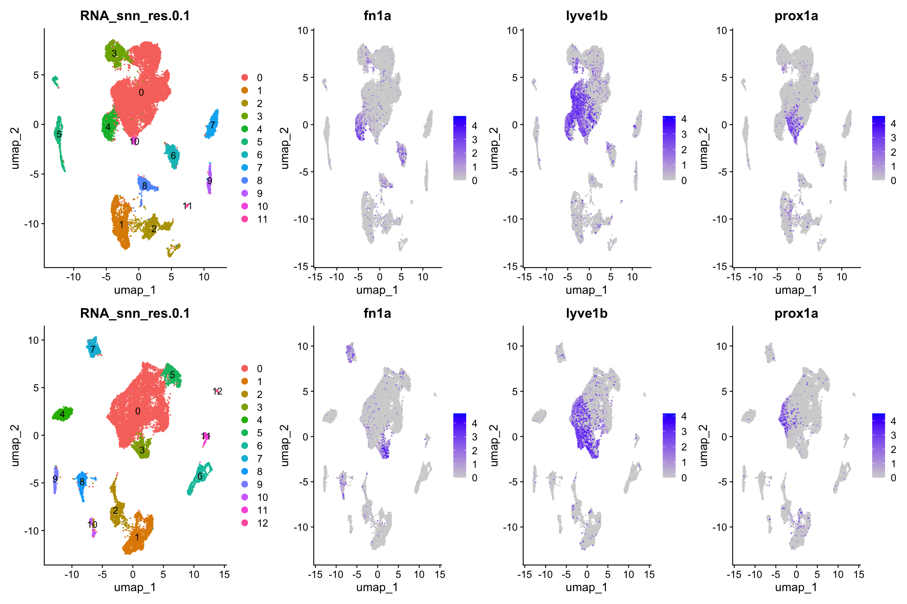
| Version | Author | Date |
|---|---|---|
| c317ea3 | Michelle Meier | 2026-01-28 |
Can already spot the hippo+ cluster, and it stands out with a wt enrichment as well! promising.
Re-run this
plot_list <- lapply(list_objects, function(seurat){
plot_list <- list()
plot_list[[1]] <- seurat@meta.data %>%
ggplot(., aes(y = log10(nCount_RNA), x = RNA_snn_res.0.5, fill=RNA_snn_res.0.5)) +
geom_boxplot() +
plot_sizing + theme(legend.position = "none")
plot_list[[2]] <- seurat@meta.data %>%
ggplot(., aes(y = log10(nFeature_RNA), x = RNA_snn_res.0.5, fill=RNA_snn_res.0.5)) +
geom_boxplot() +
plot_sizing + theme(legend.position = "none")
plot_list[[3]] <- seurat@meta.data %>%
ggplot(., aes(y = percent.mt, x = RNA_snn_res.0.5, fill=RNA_snn_res.0.5)) +
geom_boxplot() +
plot_sizing + theme(legend.position = "none")
return(plot_list)
})
wrap_plots(unlist(plot_list, recursive = F)) + plot_layout(axis_titles = "collect") 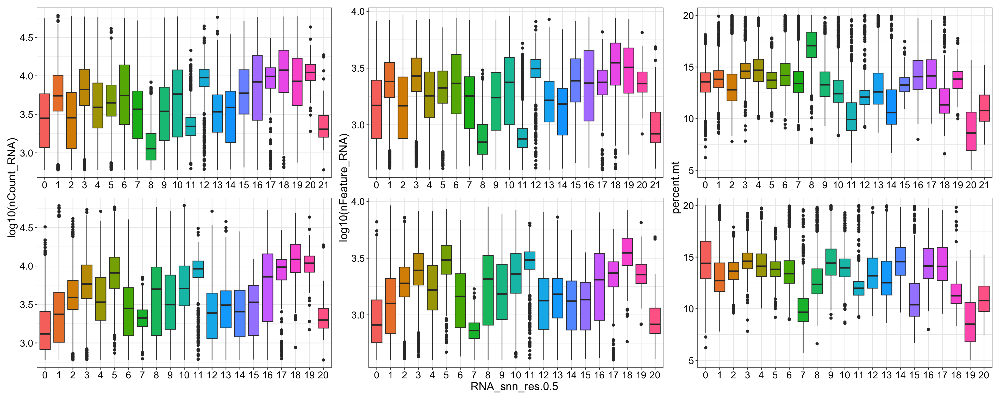
| Version | Author | Date |
|---|---|---|
| c317ea3 | Michelle Meier | 2026-01-28 |
Definitively still has some clusters that are lower…
plot_list <- lapply(list_objects, function(seurat){
DimPlot(seurat, group.by = "RNA_snn_res.0.5", shuffle = T, label = T)
})
wrap_plots(plot_list, ncol = 2)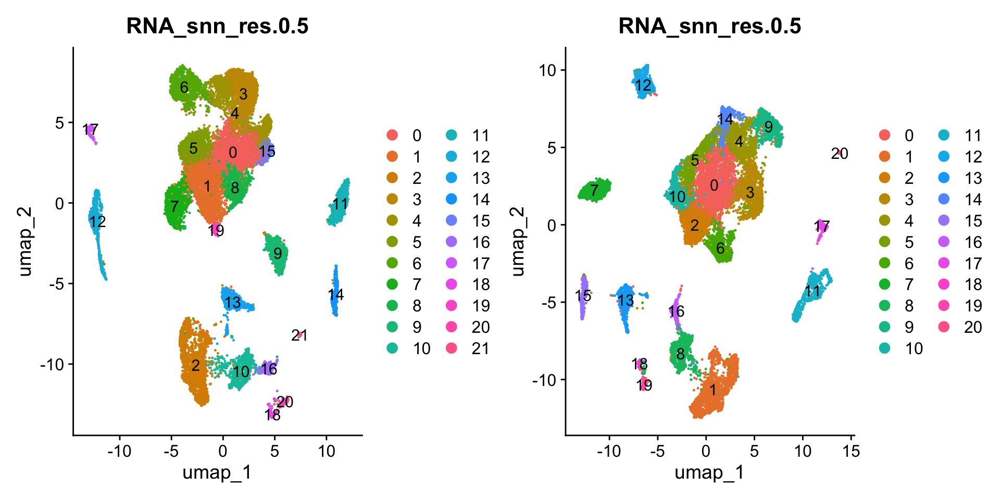
| Version | Author | Date |
|---|---|---|
| c317ea3 | Michelle Meier | 2026-01-28 |
Is there a sample difference?
plot_list <- lapply(list_objects, function(seurat){
seurat@meta.data %>%
ggplot(., aes(y = log10(nFeature_RNA), x = RNA_snn_res.0.5, fill=Genotype)) +
geom_boxplot() +
plot_sizing + theme(legend.position = "none")
})
wrap_plots(unlist(plot_list, recursive = F)) + plot_layout(axis_titles = "collect") 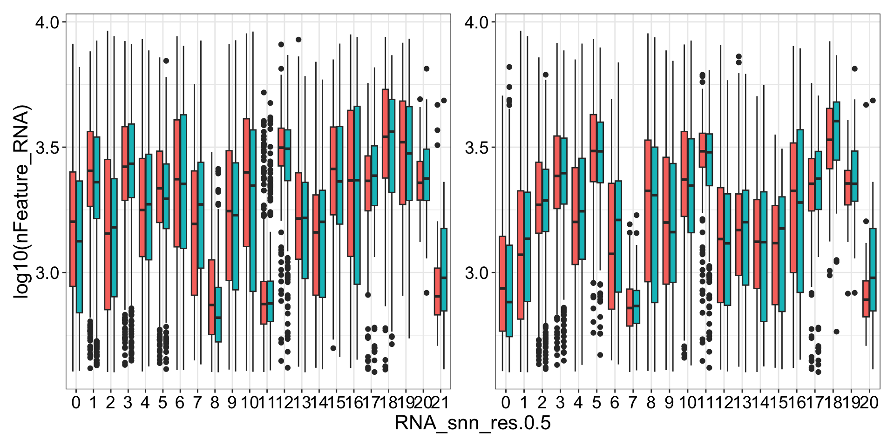
| Version | Author | Date |
|---|---|---|
| c317ea3 | Michelle Meier | 2026-01-28 |
Not really.
DimPlot(list_objects$D10051_meox1_dataset_Level_01_kept_doublets, group.by = "scDblFinder.class", shuffle = T)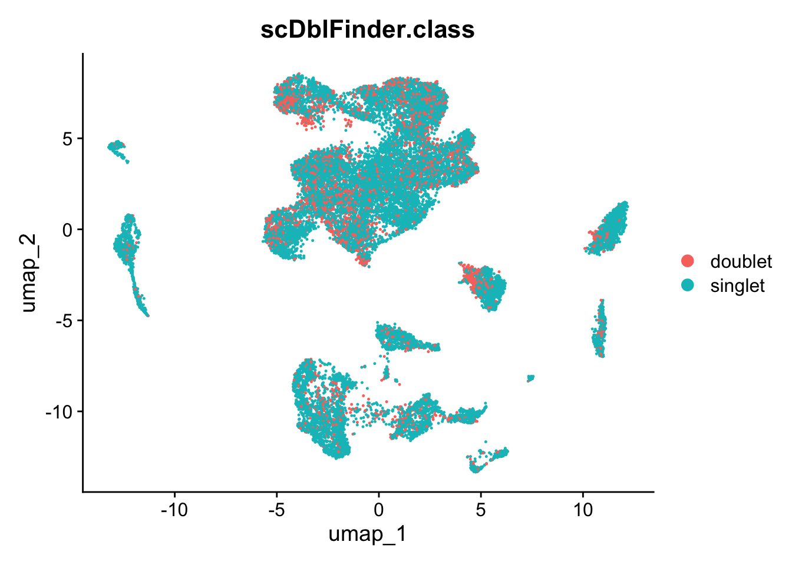
| Version | Author | Date |
|---|---|---|
| c317ea3 | Michelle Meier | 2026-01-28 |
There’s defintively quite a few in the endothelial subset, and something weird’s going on in one of the clusters.
Using scGate as a computational gating strategy to identify all endothelial cells. Endothelial cells are marked by expression of kdrl, and absence of expression of col1a1a (Fibroblasts), epcam (Epithelial), gata2b (haematopoietic), myod1 (Muscle).
Mark clusters that have > 95% purity for resolution 0.5.
endothelial_gating_model <- gating_model(name = "endothelial", signature = c("kdrl+",
"col1a1a-",
"epcam-",
"gata2b-",
"myod1-",
"gch2-",
"aox5-"))
#write function
run_scgate_endo <- function(seurat){
seurat <- scGate(data = seurat,
model = endothelial_gating_model,
output.col.name = "is_endothlial")
return(seurat)
}list_objects <- lapply(list_objects, run_scgate_endo)
### Detected a total of 16260 pure 'Target' cells (77.44% of total)
### Detected a total of 12335 pure 'Target' cells (73.12% of total)Show UMAPs with is pure
run_umap_scgate_results <- function(seurat){
#colours
pure_colours <- c("grey", "green3"); names(pure_colours) <- c("Impure", "Pure")
DimPlot(seurat, group.by = "is_endothlial", cols = pure_colours) + ggtitle(sprintf("Endo Gate, %s", seurat@misc$name))
}plot_list <- lapply(list_objects, run_umap_scgate_results)
wrap_plots(plot_list, ncol = 2) + plot_layout(guides = "collect", axis_titles = "collect")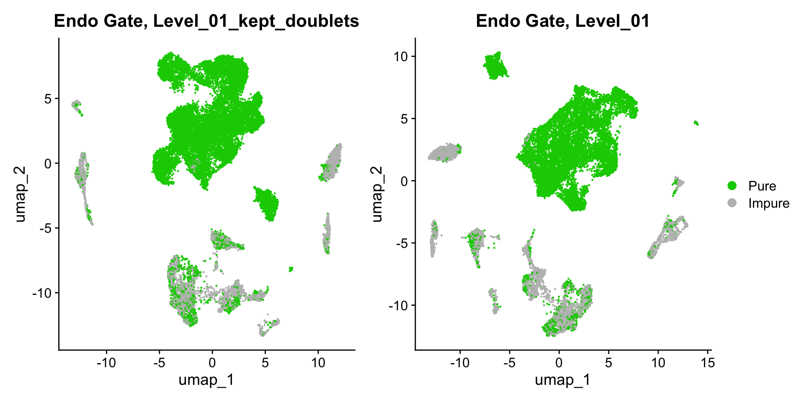
| Version | Author | Date |
|---|---|---|
| c317ea3 | Michelle Meier | 2026-01-28 |
Make barplots for endo purity
plot_list <- lapply(list_objects, function(seurat){
seurat@meta.data %>%
mutate(.,RNA_snn_res.0.5 = as.factor(RNA_snn_res.0.5)) %>%
group_by(., RNA_snn_res.0.5, is_endothlial,.drop = F) %>%
summarise(., count = n()) %>%
group_by(RNA_snn_res.0.5) %>%
mutate(., RNA_snn_res.0.5_purity = count[is_endothlial == "Pure"]/sum(count)) %>%
summarise(RNA_snn_res.0.5_purity) %>% distinct() %>%
ggplot(., aes(x= reorder(RNA_snn_res.0.5, -RNA_snn_res.0.5_purity), y = RNA_snn_res.0.5_purity))+
geom_bar(stat = "identity") + plot_sizing +
ylab("Endo Purity per cluster") + xlab("cluster") + ggtitle(seurat@misc$name)
})`summarise()` has grouped output by 'RNA_snn_res.0.5'. You can override using
the `.groups` argument.Warning: Returning more (or less) than 1 row per `summarise()` group was deprecated in
dplyr 1.1.0.
ℹ Please use `reframe()` instead.
ℹ When switching from `summarise()` to `reframe()`, remember that `reframe()`
always returns an ungrouped data frame and adjust accordingly.
Call `lifecycle::last_lifecycle_warnings()` to see where this warning was
generated.`summarise()` has grouped output by 'RNA_snn_res.0.5'. You can override using
the `.groups` argument.
`summarise()` has grouped output by 'RNA_snn_res.0.5'. You can override using
the `.groups` argument.Warning: Returning more (or less) than 1 row per `summarise()` group was deprecated in
dplyr 1.1.0.
ℹ Please use `reframe()` instead.
ℹ When switching from `summarise()` to `reframe()`, remember that `reframe()`
always returns an ungrouped data frame and adjust accordingly.
Call `lifecycle::last_lifecycle_warnings()` to see where this warning was
generated.`summarise()` has grouped output by 'RNA_snn_res.0.5'. You can override using
the `.groups` argument.wrap_plots(plot_list, ncol = 2) + plot_layout(guides = "collect", axis_titles = "collect", axes = "collect_y")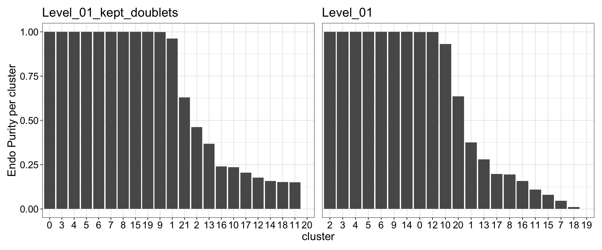
| Version | Author | Date |
|---|---|---|
| c317ea3 | Michelle Meier | 2026-01-28 |
Use some known marker genes for celltypes to double check scGate annotation.
dotplot.level.01 <- c(
"cdh6",
"prox1a",
"stab2",
"lyve1b",
"mrc1a",
"flt1",
"dll4",
"esm1",
"hlx1",
"hand2",
"fn1a",
"gata2b",
"runx1",
"alas2",
"blvrb",
"spi1b",
"mpx",
"neurod4",
"nova2",
"cdh1",
"epcam",
"myod1",
"myog",
"pmela",
"dct",
"lum",
"col1a1a",
"krt4",
"cyt1",
"cryba1b",
"crybb1",
"ednrba",
"pnp4a",
"gch2",
"aox5")Make dotplot function:
run_dotplot <- function(seurat, genes, group){
DotPlot(seurat, features = genes, group.by = group) + ggtitle(seurat@misc$name) +plot_sizing_seurat + rotate_x
}Make dotplots for all clusters
plot_list <- lapply(list_objects, function(seurat) run_dotplot(seurat, dotplot.level.01, group = "RNA_snn_res.0.5"))
wrap_plots(plot_list, ncol = 1) + plot_layout(guides = "collect", axis_titles = "collect")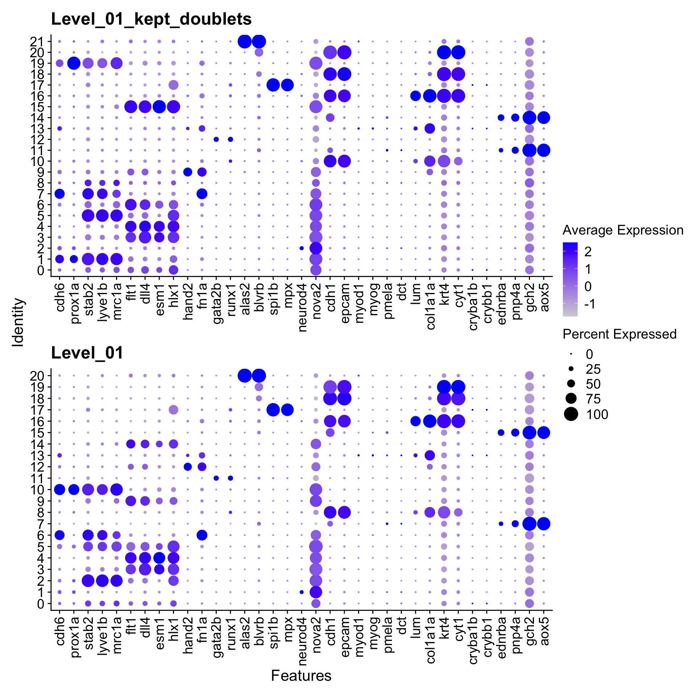
| Version | Author | Date |
|---|---|---|
| c317ea3 | Michelle Meier | 2026-01-28 |
Make dotplot for clusters that have mid-range purity.
run_dotplot_mid_purity <- function(seurat, genes, limits){
clusters <- seurat@meta.data %>%
mutate(.,RNA_snn_res.0.5 = as.factor(RNA_snn_res.0.5)) %>%
group_by(., RNA_snn_res.0.5, is_endothlial,.drop = F) %>%
summarise(., count = n()) %>%
group_by(RNA_snn_res.0.5) %>%
mutate(., RNA_snn_res.0.5_purity = count[is_endothlial == "Pure"]/sum(count)) %>%
summarise(RNA_snn_res.0.5_purity) %>%
filter(., RNA_snn_res.0.5_purity > limits[1] & RNA_snn_res.0.5_purity < limits[2] ) %>%
pull(RNA_snn_res.0.5)
seurat <- SetIdent(seurat, value = "RNA_snn_res.0.5")
DotPlot(seurat, features = genes, group.by = "RNA_snn_res.0.5", idents = clusters) + ggtitle(seurat@misc$name) +plot_sizing_seurat + rotate_x
}plot_list <- lapply(list_objects, function(seurat) run_dotplot_mid_purity(seurat, dotplot.level.01, limits = c(0.4, 0.95)))`summarise()` has grouped output by 'RNA_snn_res.0.5'. You can override using
the `.groups` argument.Warning: Returning more (or less) than 1 row per `summarise()` group was deprecated in
dplyr 1.1.0.
ℹ Please use `reframe()` instead.
ℹ When switching from `summarise()` to `reframe()`, remember that `reframe()`
always returns an ungrouped data frame and adjust accordingly.
Call `lifecycle::last_lifecycle_warnings()` to see where this warning was
generated.`summarise()` has grouped output by 'RNA_snn_res.0.5'. You can override using
the `.groups` argument.Warning: Scaling data with a low number of groups may produce misleading
results`summarise()` has grouped output by 'RNA_snn_res.0.5'. You can override using
the `.groups` argument.Warning: Returning more (or less) than 1 row per `summarise()` group was deprecated in
dplyr 1.1.0.
ℹ Please use `reframe()` instead.
ℹ When switching from `summarise()` to `reframe()`, remember that `reframe()`
always returns an ungrouped data frame and adjust accordingly.
Call `lifecycle::last_lifecycle_warnings()` to see where this warning was
generated.`summarise()` has grouped output by 'RNA_snn_res.0.5'. You can override using
the `.groups` argument.Warning: Scaling data with a low number of groups may produce misleading
resultswrap_plots(plot_list, ncol = 1) + plot_layout(guides = "collect", axis_titles = "collect")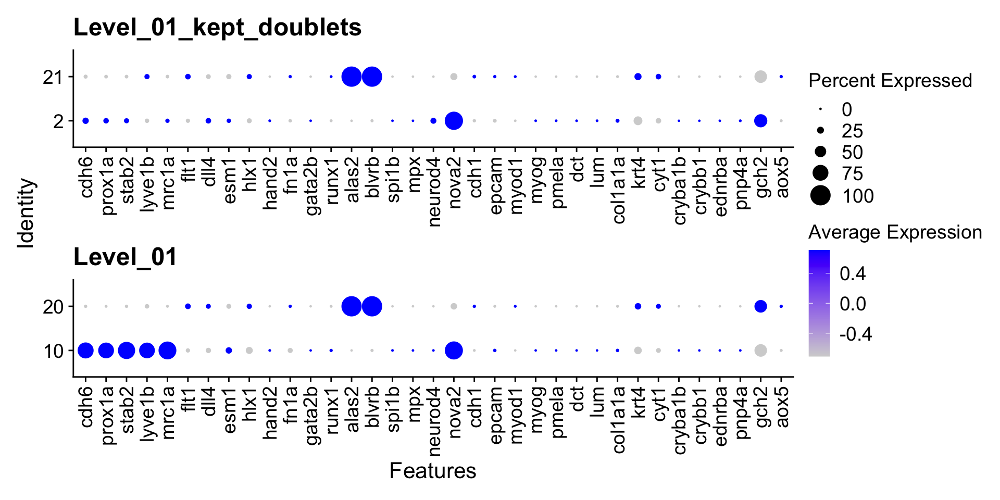
| Version | Author | Date |
|---|---|---|
| c317ea3 | Michelle Meier | 2026-01-28 |
In kept doublet setting, I’d say it looks fine.
Looking more into cluster 10 in the doublet removed setting. They’re prox1a+, so they’re probably LECs. What’s the purity there?
list_objects$D10051_meox1_dataset_Level_01@meta.data %>%
mutate(.,RNA_snn_res.0.5 = as.factor(RNA_snn_res.0.5)) %>%
group_by(., RNA_snn_res.0.5, is_endothlial,.drop = F) %>%
summarise(., count = n()) %>%
group_by(RNA_snn_res.0.5) %>%
mutate(., RNA_snn_res.0.5_purity = count[is_endothlial == "Pure"]/sum(count)) %>%
summarise(RNA_snn_res.0.5_purity) %>%
filter(., RNA_snn_res.0.5_purity > 0.4 & RNA_snn_res.0.5_purity < 0.95) %>%
distinct()`summarise()` has grouped output by 'RNA_snn_res.0.5'. You can override using
the `.groups` argument.Warning: Returning more (or less) than 1 row per `summarise()` group was deprecated in
dplyr 1.1.0.
ℹ Please use `reframe()` instead.
ℹ When switching from `summarise()` to `reframe()`, remember that `reframe()`
always returns an ungrouped data frame and adjust accordingly.
Call `lifecycle::last_lifecycle_warnings()` to see where this warning was
generated.`summarise()` has grouped output by 'RNA_snn_res.0.5'. You can override using
the `.groups` argument.# A tibble: 2 × 2
# Groups: RNA_snn_res.0.5 [21]
RNA_snn_res.0.5 RNA_snn_res.0.5_purity
<fct> <dbl>
1 10 0.931
2 20 0.636Ah right, so 93% purity.. That’s fair we’ll include it!
Export them all. Selection of clusters to move to Level 02 will happen in next script
file_name <- here('output/data/Datsets/D10051_meox1_dataset/D10051_meox1_dataset_Level_01_annotated.qs2')
qs_save(list_objects$D10051_meox1_dataset_Level_01, file_name)
file_name <- here('output/data/Datsets/D10051_meox1_dataset/D10051_meox1_dataset_Level_01_kept_doublets_annotated.qs2')
qs_save(list_objects$D10051_meox1_dataset_Level_01_kept_doublets , file_name)
sessionInfo()R version 4.5.0 (2025-04-11)
Platform: aarch64-apple-darwin20
Running under: macOS Sequoia 15.7.3
Matrix products: default
BLAS: /Library/Frameworks/R.framework/Versions/4.5-arm64/Resources/lib/libRblas.0.dylib
LAPACK: /Library/Frameworks/R.framework/Versions/4.5-arm64/Resources/lib/libRlapack.dylib; LAPACK version 3.12.1
locale:
[1] en_US.UTF-8/en_US.UTF-8/en_US.UTF-8/C/en_US.UTF-8/en_US.UTF-8
time zone: Australia/Melbourne
tzcode source: internal
attached base packages:
[1] stats4 stats graphics grDevices datasets utils methods
[8] base
other attached packages:
[1] future_1.69.0 scGate_1.7.2
[3] tricycle_1.18.0 qs2_0.1.7
[5] scran_1.38.0 scater_1.38.0
[7] scuttle_1.20.0 patchwork_1.3.2
[9] clustree_0.5.1 ggraph_2.2.2
[11] ggpubr_0.6.2 scDblFinder_1.24.0
[13] SingleCellExperiment_1.32.0 SummarizedExperiment_1.40.0
[15] Biobase_2.70.0 GenomicRanges_1.62.1
[17] Seqinfo_1.0.0 IRanges_2.44.0
[19] S4Vectors_0.48.0 BiocGenerics_0.56.0
[21] generics_0.1.4 MatrixGenerics_1.22.0
[23] matrixStats_1.5.0 Seurat_5.4.0
[25] SeuratObject_5.3.0 sp_2.2-0
[27] here_1.0.2 lubridate_1.9.4
[29] forcats_1.0.1 stringr_1.5.1
[31] dplyr_1.1.4 purrr_1.2.1
[33] readr_2.1.6 tidyr_1.3.2
[35] tibble_3.3.1 ggplot2_4.0.1
[37] tidyverse_2.0.0 workflowr_1.7.1
loaded via a namespace (and not attached):
[1] fs_1.6.6 spatstat.sparse_3.1-0 bitops_1.0-9
[4] httr_1.4.7 RColorBrewer_1.1-3 tools_4.5.0
[7] sctransform_0.4.3 backports_1.5.0 utf8_1.2.6
[10] R6_2.6.1 mgcv_1.9-1 lazyeval_0.2.2
[13] uwot_0.2.4 withr_3.0.2 gridExtra_2.3
[16] progressr_0.18.0 cli_3.6.5 spatstat.explore_3.7-0
[19] fastDummies_1.7.5 labeling_0.4.3 sass_0.4.10
[22] mvtnorm_1.3-3 S7_0.2.1 spatstat.data_3.1-9
[25] ggridges_0.5.7 pbapply_1.7-4 Rsamtools_2.26.0
[28] parallelly_1.46.1 limma_3.66.0 RSQLite_2.4.5
[31] rstudioapi_0.17.1 circular_0.5-2 BiocIO_1.20.0
[34] ica_1.0-3 spatstat.random_3.4-4 car_3.1-3
[37] Matrix_1.7-3 ggbeeswarm_0.7.3 abind_1.4-8
[40] lifecycle_1.0.4 whisker_0.4.1 yaml_2.3.10
[43] edgeR_4.8.2 carData_3.0-5 SparseArray_1.10.8
[46] Rtsne_0.17 blob_1.3.0 grid_4.5.0
[49] promises_1.5.0 dqrng_0.4.1 crayon_1.5.3
[52] miniUI_0.1.2 lattice_0.22-6 beachmat_2.26.0
[55] cowplot_1.2.0 cigarillo_1.0.0 KEGGREST_1.50.0
[58] pillar_1.11.1 knitr_1.50 metapod_1.18.0
[61] boot_1.3-31 rjson_0.2.23 xgboost_3.1.3.1
[64] future.apply_1.20.1 codetools_0.2-20 glue_1.8.0
[67] getPass_0.2-4 spatstat.univar_3.1-6 data.table_1.18.0
[70] vctrs_0.6.5 png_0.1-8 spam_2.11-3
[73] gtable_0.3.6 cachem_1.1.0 xfun_0.52
[76] S4Arrays_1.10.1 mime_0.13 tidygraph_1.3.1
[79] survival_3.8-3 statmod_1.5.1 bluster_1.20.0
[82] fitdistrplus_1.2-5 ROCR_1.0-11 nlme_3.1-168
[85] bit64_4.6.0-1 RcppAnnoy_0.0.23 GenomeInfoDb_1.46.2
[88] rprojroot_2.1.1 bslib_0.9.0 irlba_2.3.5.1
[91] vipor_0.4.7 KernSmooth_2.23-26 otel_0.2.0
[94] colorspace_2.1-2 DBI_1.2.3 UCell_2.14.0
[97] tidyselect_1.2.1 processx_3.8.6 bit_4.6.0
[100] compiler_4.5.0 curl_6.2.2 git2r_0.36.2
[103] BiocNeighbors_2.4.0 DelayedArray_0.36.0 plotly_4.11.0
[106] stringfish_0.18.0 rtracklayer_1.70.1 checkmate_2.3.3
[109] scales_1.4.0 lmtest_0.9-40 callr_3.7.6
[112] digest_0.6.37 goftest_1.2-3 spatstat.utils_3.2-1
[115] rmarkdown_2.29 XVector_0.50.0 htmltools_0.5.8.1
[118] pkgconfig_2.0.3 fastmap_1.2.0 rlang_1.1.6
[121] htmlwidgets_1.6.4 UCSC.utils_1.6.1 shiny_1.12.1
[124] farver_2.1.2 jquerylib_0.1.4 zoo_1.8-15
[127] jsonlite_2.0.0 BiocParallel_1.44.0 BiocSingular_1.26.1
[130] RCurl_1.98-1.17 magrittr_2.0.3 Formula_1.2-5
[133] dotCall64_1.2 Rcpp_1.0.14 ggnewscale_0.5.2
[136] viridis_0.6.5 reticulate_1.44.1 stringi_1.8.7
[139] MASS_7.3-65 plyr_1.8.9 parallel_4.5.0
[142] listenv_0.10.0 ggrepel_0.9.6 deldir_2.0-4
[145] graphlayouts_1.2.2 Biostrings_2.78.0 splines_4.5.0
[148] tensor_1.5.1 hms_1.1.4 locfit_1.5-9.12
[151] ps_1.9.1 igraph_2.2.1 spatstat.geom_3.7-0
[154] ggsignif_0.6.4 RcppHNSW_0.6.0 reshape2_1.4.5
[157] ScaledMatrix_1.18.0 XML_3.99-0.20 evaluate_1.0.3
[160] RcppParallel_5.1.11-1 renv_1.1.4 BiocManager_1.30.27
[163] tweenr_2.0.3 tzdb_0.5.0 httpuv_1.6.16
[166] RANN_2.6.2 polyclip_1.10-7 scattermore_1.2
[169] ggforce_0.5.0 rsvd_1.0.5 broom_1.0.11
[172] xtable_1.8-4 restfulr_0.0.16 RSpectra_0.16-2
[175] rstatix_0.7.3 later_1.4.2 viridisLite_0.4.2
[178] AnnotationDbi_1.72.0 memoise_2.0.1 beeswarm_0.4.0
[181] GenomicAlignments_1.46.0 cluster_2.1.8.1 timechange_0.3.0
[184] globals_0.18.0
Comment on having an even more stringent filter
At this stage I can’t really justify removing more cells by increasing the thresholds, though the data distribution does really look strange.